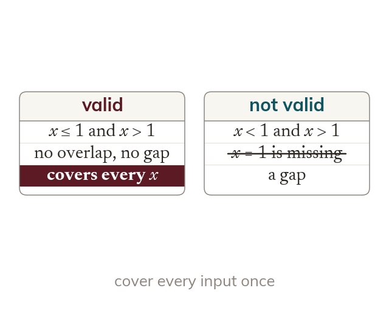

Sub-domains
A piecewise function uses a different rule on each part of its domain. The parts must cover every input once, with no overlap and no gap.
A piecewise function uses a different rule on each part of its domain, and the parts must cover every input once. They must not overlap, and they must not leave a gap.